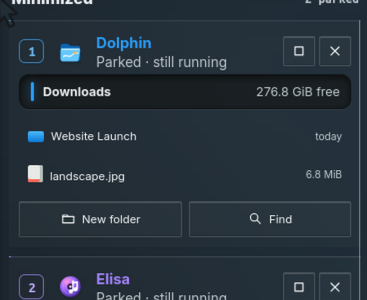
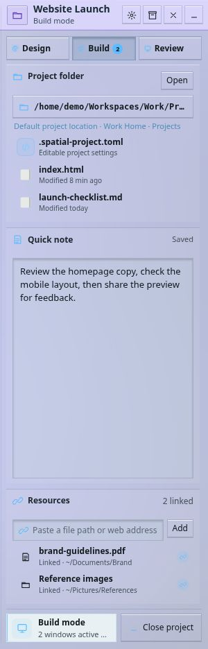
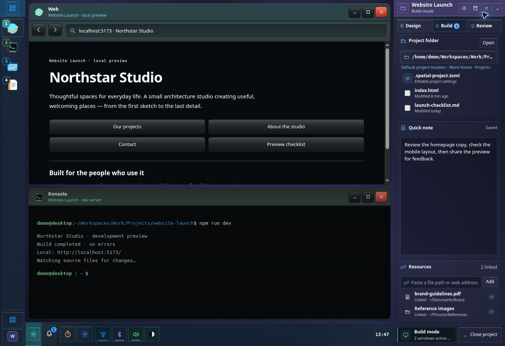
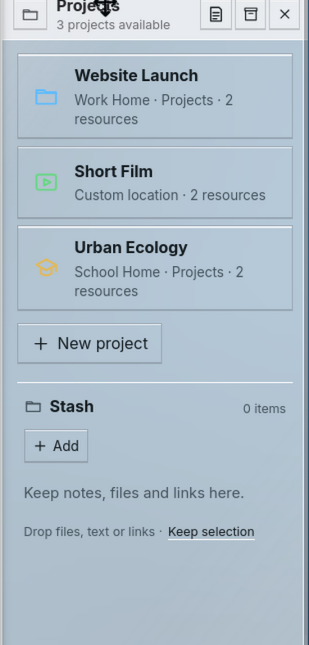
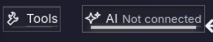
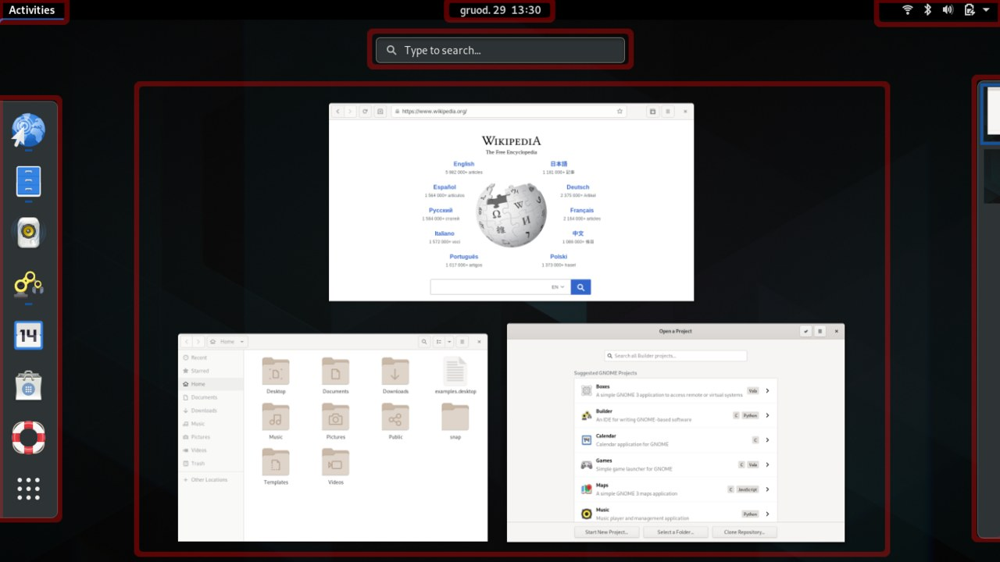
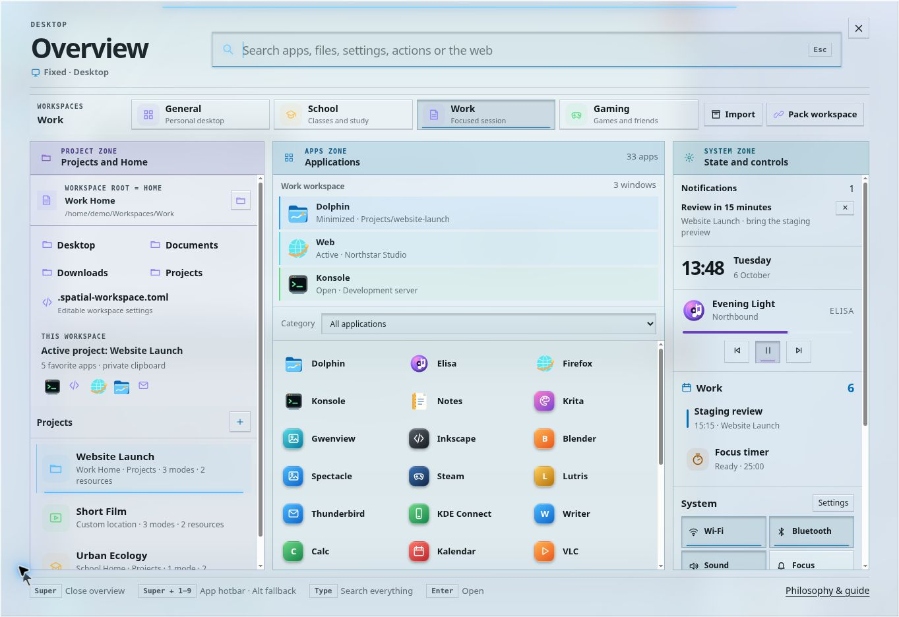
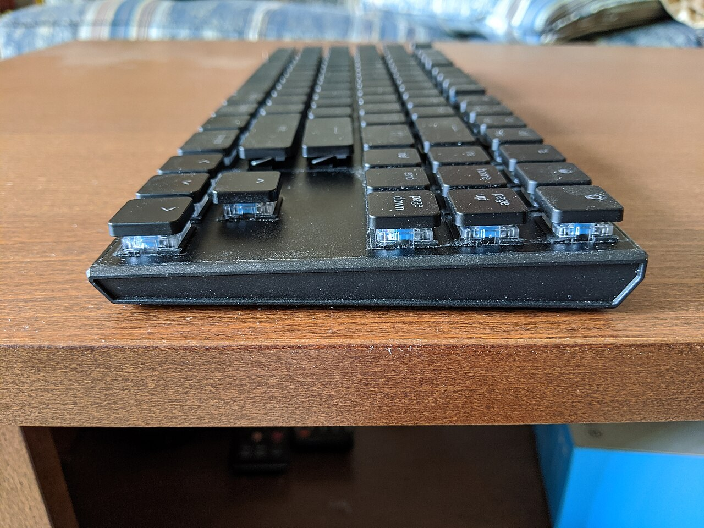
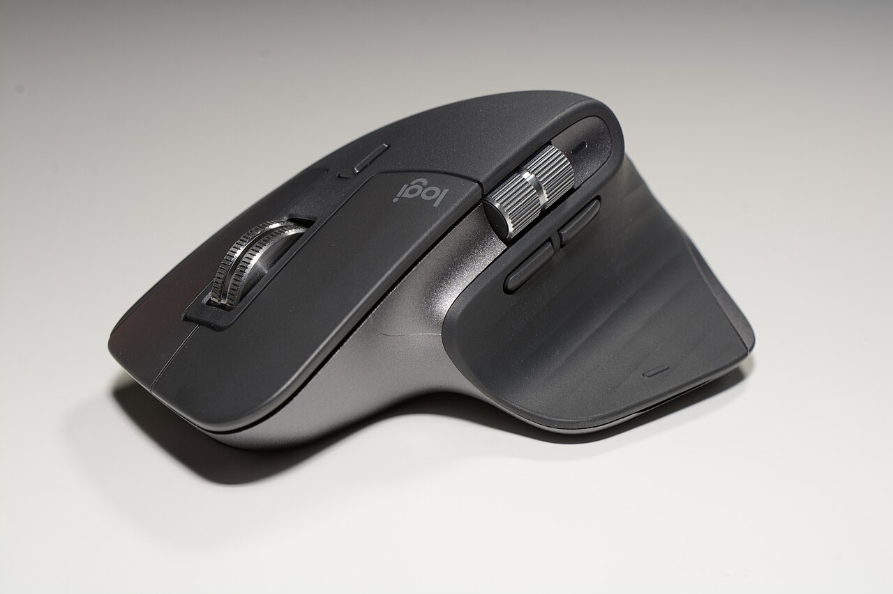
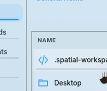

Which environment?
Work, School or personal life, with its own Home and app state.
THE REASONS BEHIND SPATIAL DESKTOP
This is the previous AI-written design record. Read Xef’s current design philosophy.
A desktop should help you return to a piece of work, not just return to the applications that happened to be open.
This is the design record behind the current prototype: what each part is for, why it behaves that way, and why we changed earlier versions. The choices grew through Xef’s project conversations and hands-on revisions, rather than from a fixed visual theme.
Work in progress · revised 12 October 2026. These are design hypotheses, not measured usability findings. The page distinguishes the browser demo from intended native behaviour. Reference photographs illustrate influences. Actual earlier screenshots sit beside the changes they explain, with what to notice and why we changed it; these are history, not current controls.
01 / THE CENTRAL IDEA
The problem we are designing for is the effort of reconstructing a piece of work: finding its windows, remembering which files mattered, locating the reference you saved, and working out where you stopped. A desktop should preserve those relationships instead of leaving you to rebuild them from unrelated app icons.
Spatial Desktop gives different relationships different homes. An application is a tool. An Area is a place for a recurring kind of interaction. A desktop is a page of windows. A Project owns one piece of work. A Workspace separates broader environments. Stash keeps things you deliberately put aside; Timeline helps you retrace activity; AI works with context you provide.
Work, School or personal life, with its own Home and app state.
A website or assignment, with a folder and its own desktop stack.
A spatial arrangement within the current Workspace or Project.
You do not need all of this to open a file. Ordinary Workspace desktops are a complete place to work, including Stash and AI. Projects become useful when a particular piece of work needs its own continuing context; a second Workspace becomes useful when the broader environment should change.
Earlier versions mixed project membership with window arrangements called Modes. That made it harder to tell whether changing the layout also changed what the windows belonged to. The current rule is clearer: layout can change; ownership changes only when you explicitly move a window into another context.
02 / FOUR AREAS
One strip containing app switching, notifications, projects and AI would make unrelated actions compete for the same small space. Four docked Areas give each a recognisable location and a useful expanded form.
| Area | Its job | Why it has a place |
|---|---|---|
| Apps | Visible windows and useful parked tools. | Switching and putting tools aside belong together. |
| Workspace & Projects | Current folder, Stash and project management. | Capture and organising work remain available without a Project. |
| System | Time, notifications, calendar, devices and settings. | System information should not compete with the contents of a Project. |
| AI | A conversation and the context attached to it. | AI can help with everyday work as well as project work. |
On a landscape display, the default Areas are vertical. Drag a header to dock an Area on another edge; drag its inner border to resize it into an expanded panel or a rail. All four can be hidden and recovered through Overview. Hiding an Area does not close its apps or discard its contents.
Resizing stops at a usable boundary. Side docks have a 520 px ceiling and top or bottom docks a 360 px ceiling, with a further limit of 40% of the display and a reservation for the working canvas. The opposite dock keeps its space during the drag. Smaller viewports impose tighter limits; shrinking to a rail remains possible. This prevents a manual adjustment from making the desktop or its neighbours disappear.
Headers hold identity and actions; there are no footers. On a rail, the beginning, middle and end still have different roles instead of becoming an undifferentiated stack of buttons. The combined Workspace/Overview control changes its icon with the Workspace and carries the current desktop number, replacing separate controls for the same context.
Areas share the same glass brightness. Seams and role labels distinguish adjacent panels; the visible glass edge faces the working canvas, away from the physical screen frame. This makes the boundary useful without making one Area look more important simply because it is brighter.
A stable place can grow when you need it and return to a rail afterwards. It does not introduce another floating layer to arrange. We removed the extra Compact state and moved repeated footer actions into headers to reduce the number of layouts and locations to learn.
03 / WINDOWS
Apps tile automatically into the space left by the Areas. Opening a second tool produces side-by-side vertical halves when usable space permits. New tiled windows fill a row from left to right, then move to the next row; the setup demo uses the same order. Floating obstacles and minimum usable sizes can constrain what fits. Drag a title bar to rearrange a tile, and use dividers or resize handles to change its share of the canvas.
Automatic tiling is a starting point, not the only way to work. Hold the middle mouse button while dragging a title bar, or use Alt + left-drag, to float a window. A normal title-bar drag or the window menu returns it to tiling. Deliberately borrowing Area space requires crossing a resistant boundary so an accidental touch does not rearrange everything.
Maximize fills the working canvas while keeping Areas accessible. Fullscreen uses the entire display. They answer different needs: concentrate on one tool while keeping context nearby, or give that tool every pixel. Left-click the maximize control for Maximize; middle-click it for Fullscreen. Repeat to restore.
Other apps can move temporarily to the second display when they fit without parking its existing apps; otherwise they park in Apps. Restore returns automatically transferred or parked peers while respecting deliberate moves, closing and parking. Fullscreen also sends Areas to the second display when capacity permits, or temporarily hides them and restores them on exit.
Windows and Areas reacting automatically to one another can create a moving target. Ordinary tiling respects the chosen Area layout; deliberate gestures request an override. When another window cannot fit, parking keeps it reachable rather than leaving it completely obscured. Restore and visible parked tools make that change recoverable.
04 / PARKING
We use parked instead of minimized because the intended result is a tool still available beside the work. A parked Music Player exposes playback controls; a Note Editor keeps useful note content; a File Browser exposes relevant files and actions. These are interfaces designed for the smaller space, rather than unreadable screenshots of whole windows.
In the expanded Apps Area, visible windows have icons at the top and parked apps have their useful cards below. We removed the additional parked icon there because it repeated the same tool. On a rail, open-window icons stay at the top, while parked icons begin around the lower middle and continue downwards. That keeps them distinct without sending your eyes to the very bottom of the screen.
Click a parked entry to restore it, or use its number. Right-click a rail entry for actions relevant to that app, like a background tool in a system tray. Parked apps travel between desktops inside their owning context; restoring one brings it onto the page you are viewing. Parking does not move it into a different Project or Workspace, and does not quit it.
An icon tells you that a tool exists. A useful parked interface lets you do the small thing you needed without rebuilding its full window. The rail remains a compact alternative when space matters. This relies on app-specific interfaces; the prototype supplies them for its simulated apps, rather than promising that any existing application can automatically shrink this way.
05 / APP HOTBAR
A numbered hotbar connects the tool you recognise with the key that reaches it. You can read a slot instead of counting icons or memorising a separate shortcut. Each open window also shows its matching number as plain text in the title bar, without a border, background or shadow, so you do not need to look back at the Apps Area. Numbers follow the visible windows from left to right across each row, then top to bottom; moving or retiling windows updates their shortcuts together. Press Super + its number to focus or restore that window; press again while it is frontmost to park it.
Each window instance has its own slot. Open windows follow their spatial order: left to right within a row, then top to bottom. The bar shows open windows visible on the current desktop and parked tools in the current context, rather than implying that every open window is on this page.
The number overlays a small part of the icon. We first made the badges more conspicuous, then reduced their frames because the badge was becoming easier to recognise than the app. The icon remains the primary identity, and the number is a readable instruction beside it. Numbers may change as the visible arrangement changes: this is a view of the current layout, not a promise of permanent app assignments.

The first ten slots use Super + 1–9, 0; the next ten add Shift. The browser also supports Alt as a fallback. More windows remain clickable. Optionally mapping a mouse side button to Super while held would let the mouse hand supply the modifier and the other hand press a number; the web prototype does not configure that mapping.
The app identity, its position and its shortcut are the same thing you already look at. Mouse use teaches the shortcut without a lesson. Launching and finding apps still belong in Overview; the hotbar handles tools already in your current work.

Look at the number: it occupies its own framed slot beside the app icon. That makes a navigation hint resemble another control and adds enclosure around an already recognisable tool.
What changed: the icon stays dominant. Hotbar numbers are small overlays, and parked-card numbers do not need a separate badge housing. A persistent state mark belongs inside its element, using one readable line.
Spatial Desktop · actual earlier screenshot · Open original image06 / VERTICAL DESKTOPS
Desktops are vertical pages within the ordinary Workspace context or an open Project. They separate window arrangements without inventing a new category for each arrangement. One page might hold an editor and preview, the next files and reference material.
Click the background or any Area to release window focus, then scroll to another desktop. A focused app keeps ordinary scrolling for its own content. Win + scroll provides desktop navigation even from a focused window or Area. Page Up and Page Down are also available when window focus is released.
Only the desktop canvas moves vertically; Areas stay in place. Lines on both sides show the available pages and the current one, and the Workspace button carries the page number. We adjusted the light-theme lines after they were too faint, then too harsh: they should remain a readable orientation cue without becoming a dominant border.
Hold a window by its title bar with the left button and scroll to carry it onto another page, then release to place it. This preserves the spatial operation instead of requiring a separate move dialog. A cancelled drag returns to the original placement.
Named Modes asked you to understand another layer before simply making room for windows. Scrolling keeps the idea concrete: another page of the same work. Project identity and desktop position are now separate, and their animations communicate that difference.

Look at Design, Build and Review: these were named Modes inside a Project. The selected Build tab and window count introduce another layer between the work and its window arrangements.
Why we changed it: another layout did not need another named concept. Vertical desktops now provide extra pages inside the same Project. This is a displayed header detail; open the original to see the whole Area.
Spatial Desktop · actual earlier screenshot · Open original image07 / PROJECTS
An earlier version distinguished project windows mainly with a small label. That was too weak: you could see a window without clearly knowing whether it belonged to the Project or the ordinary Workspace. The current design gives every open Project its own vertical stack of desktops. All windows in that stack belong to that Project, and unrelated windows live elsewhere.
Multiple Projects can remain open in a Workspace. Switch horizontally with their tabs, or with Shift + scroll after releasing window focus. Win + Shift + scroll works from a focused app or Area. The entire scene, including Areas, moves horizontally because the context is changing. A desktop switch moves only the canvas because the context is staying the same.
When at least one Project is open, a context strip lists the ordinary Workspace and every open Project. When none is open, the strip is unnecessary. A larger, longer-lasting centre label makes a Project switch legible while it happens. Individual window-top project lines were removed once ownership was already expressed by the whole context.
The Workspace & Projects Area stays present when you close a Project. It returns to Workspace contents, including its Stash and project list. Closing saves the Project’s arrangement; opening resumes it. An extra “Continue working” action would ask you to request something the Project should already do automatically.
We tried a large ABS extension from the project panel, then a glass frame around the desktop. Those treatments added a large visual structure without solving ownership clearly enough. Dedicated project space, names and distinct navigation now explain membership directly. Moving a window to another Project is an explicit action, including carrying it with Shift + scroll; changing its layout alone does not change ownership.

Look at the window subtitles and right-hand tabs: project membership depended on small labels, while the Project Area also carried Mode selection. There is no current-style strip listing ordinary Workspace desktops alongside every open Project.
What changed: a Project now owns its whole desktop stack. The horizontal context strip identifies the active piece of work; the separate vertical motion changes only its page. This screenshot records the label-and-Mode approach, rather than the later frame experiment.
Spatial Desktop · actual earlier screenshot · Open original image08 / WORKSPACES
A Project answers which piece of work you are doing. A Workspace answers which broader environment you are in. Work and personal life may need different browser state, media, app instances, files, favourite tools and Area arrangements. Merely moving the same windows onto another desktop would leave much of that context mixed together.
Each Workspace remembers its own setup and open Projects. Returning should put you back into that environment, rather than asking you to rebuild it. A Project can be opened in more than one Workspace; it is not itself a replacement for the Workspace’s Home.
General is a complete ordinary environment. You can open apps, park tools, use multiple desktops, save to Stash and ask AI without creating a Project. Workspaces organise context, rather than acting as separate user accounts or a filesystem security boundary.
Making every assignment or website a Workspace would also change the broader Home and environment each time. Projects keep a piece of work together inside that environment; desktops give it more room. Each level earns its place by changing something different.
09 / FOLDERS & DOWNLOADS
A Workspace’s folder acts as its Home. Its standard folders are Desktop, Documents, Downloads, Pictures, Videos, Music, Templates and Public, with Projects and Stash alongside them. There is no second Home nested inside it. Downloads from ordinary Workspace apps belong in that Workspace’s Downloads, not a shared destination that mixes every context.
A Project does not override all these folders. By default, even its downloads follow the Workspace. An optional Download into this project setting creates a Downloads folder inside the Project and routes downloads from that Project’s windows there. Turning it off preserves existing files and restores the Workspace destination.
| Working context | Download destination | Stash location |
|---|---|---|
| Work Workspace | Work/Downloads/ | Work/Stash/ |
| Website Project, default | Work/Downloads/ | Work/Projects/Website/Stash/ |
| Website Project, opt-in | Work/Projects/Website/Downloads/ | Work/Projects/Website/Stash/ |
A Project may use any folder, including another drive; the Workspace’s Projects folder is a convenient default. The proposed native storage model puts setup metadata beside the files in .spatial-project.toml and .spatial-workspace.toml. Sharing a setup should distinguish included files from external links and report missing resources, rather than pretending a saved layout transfers every running process.
A Workspace is a change of environment, so its standard destinations should change together. A Project is a smaller commitment: it should not silently redirect personal Music, Pictures or Documents. Project downloads are useful, but the user chooses that exception. The browser demonstrates these destinations with simulated files; it does not redirect real host-browser downloads or configure Linux Home folders.
10 / STASH
Stash is for the moment you find something worth returning to: a paragraph, link, photo, audio clip, document or a quick note of your own. Drop or paste it in, or write a note directly. Capture does not begin with a modal asking for a title, category and explanation; the content supplies an initial identity and saves without that ceremony.
Stash sits above the project list and the single Create Project action in Workspace & Projects. Its frequent job is receiving and returning material while you work. Putting it inside Overview would add an extra opening step to every quick drag. Putting it in a project-only Area would incorrectly imply that ordinary work cannot use it.
On ordinary desktops it uses the Workspace’s Stash folder. In a Project it uses that Project’s Stash folder. The same place in the interface follows the current context, while the stored items remain separate. Notes and captured material have saved representations; a linked item must remain distinguishable from a copied file, including where its source lives.
Items are collapsed by default and differ by type, so a stack of notes, photos and audio does not turn into a wall of editable text boxes. Expand what you need, drag it back into a tool or attach it to AI. Source tags add useful provenance—Workspace, Project, app or browser origin—without restating a title you can already read.
Those features were receiving overlapping kinds of material in different places. Stash gives them one capture path. Quick Note initially remained separate, but once Stash could accept a note directly it duplicated the same action. We also removed “Keep selection”, mandatory “Why I kept this” text and redundant demo tags: keeping an item should not require explaining it to the interface.
Look at Quick Note and Resources: text and reference material had different capture locations. The note also reserved a large field even when its content was short.
What changed: typed Stash items share one capture path and collapse when you are not using them. Quick Note no longer duplicates note capture.
Spatial Desktop · actual earlier screenshot · Open original image
Look at the order: project management and New Project come before the Stash drop target. “Keep selection” adds a second capture action at the bottom.
What changed: Stash comes first because keeping and reusing material is frequent. Projects and one Create Project action sit below it; drop, paste and note entry replace the extra capture button.
Spatial Desktop · actual earlier screenshot · Open original image11 / AI & CONTEXT
AI has its own fourth Area because you may want help without an open Project. A System button made it feel like a setting; placing it only beside project resources made project membership a prerequisite. A conversation has a different job from either System or storage, and its own place keeps that job legible.
Opening AI reveals the full conversation interface directly. Its entry point is a text input, rather than rows of predefined requests. You describe what you want and drag in relevant material. Attachments carry source tags such as Workspace, Project, app or browser context, so the conversation shows what was supplied and where it came from.
Attaching project material supplies that Project’s folder as the working folder. That relationship should be visible: a working folder is a destination and scope, not permission to treat every file or every open window as an invisible attachment. AI identity is explicit, and a result can be kept in Stash as a separate, deliberate action.
For example, attach a saved meeting note and ask for a short checklist. Or attach a reference image and ask which details matter for the current design. The point is carrying selected context into a useful request, without rebuilding it by copying unrelated fragments into a separate chat.
Our discussion of Scott Jenson’s desktop ideas and working memory raised the question of continuity: how can a computer help you return to what mattered? Our answer separates deliberate keeping, retracing activity and asking for assistance. Stash is not automatically generated memory, and an AI reply is not the project’s authoritative state. Projects already save and resume; AI does not need a “Continue working” button to perform that job.
The AI in this demo is scripted. It demonstrates conversations, attachments and context handling. It does not call a real model or autonomously execute the suggested work.

Look at the two entry points: Tools and AI appear as small commands around the project material. They do not explain where a continuing conversation belongs.
What changed: AI has a fourth Area that opens directly into a text-input conversation, including when no Project is open. Source tags explain attached context; predefined command buttons are not the main interaction.
Spatial Desktop · actual earlier screenshot · Open original image12 / OVERVIEW
Overview is the shared entry point for apps, windows, Projects, Workspaces, Home and System. It is useful both when you know what to search for and when you only recognise something on sight. The combined Workspace button opens it; Super is the keyboard entry point.
Sections form a horizontal, snapping sequence. Neighbouring sections remain visible at the edges so there is a direction to explore; content can extend beyond its panel instead of being oddly clipped at the preview boundary. Wheel navigation works across Overview, not just its header. Nested vertical content retains its own scrolling, with Shift available for section navigation.
Windows and app launching belong together, but are visibly different actions. A window map and running entries help you return to something already open; the catalogue lets you start another tool. Filters and search narrow the same surface instead of sending you into a second launcher.

More capabilities made a single packed Overview harder to scan. The section layout gives each topic room while its visible neighbours preserve orientation. Snapping should settle on a section; the earlier jiggle was a bug, not intended motion. We also removed a redundant desktop thumbnail: the glass surface already keeps the underlying desktop present.

Look at the competing lists: folders, Projects, running windows, the app catalogue and System widgets each need attention within the same view. As more capabilities arrived, simply adding another section would make each one smaller.
What changed: horizontal snapping sections give each topic room. Visible neighbours indicate what is beside the current section, and wheel navigation works across Overview. Timeline also gets enough space to align activity with plans.
Spatial Desktop · actual earlier screenshot · Open original image13 / TIMELINE
A log of clicks cannot answer “What was I working on during that meeting?” by itself. Timeline places desktop activity beside calendar events, to-dos and reminders on a shared time axis. Scheduled items appear even if you never opened their apps: a meeting was part of the day whether or not you clicked its card.
Time is shown on the left. Activity and plans occupy adjacent lanes, and events with duration stretch across their actual span. A forty-minute meeting is not reduced to a point saying it happened here. Work done during that span can be seen beside it, including overlapping events, instead of forcing you to mentally align two lists.
Timeline lets you recover related work and its context. Plans and recorded actions retain different meanings: a scheduled task is not evidence that it was completed. “Now” and the latest recorded activity are also different positions. Example history is presented as sample material, not as something the visitor actually did.
Retracing a day benefits from a broad time view; quickly keeping a link benefits from a target already beside the work. Timeline helps reconstruct what happened, while Stash contains what you deliberately kept. Neither should require recording every keystroke or pretending the system knows why an activity mattered. Calendar and task data in the prototype are local examples, not connected services.
14 / ABS & GLASS
App windows use ABS plastic as their visual model: solid, matte and rounded, like a shallow mouse-button shell. Their main content is opaque because reading and editing need a stable surface. Areas, Overview and context menus use square glass or acrylic: the environment remains present while these surfaces provide context around the tools.
Squircle shells, circular controls where appropriate, opaque working content and shallow press feedback.
Straight edges, readable engraved marks and restrained local light within the shared sheet.
The material rule reaches controls: ABS slider handles are round; glass handles are rectangular. Glass surfaces and their fields stay square. ABS address and search fields can be rounded when they stand alone. At joined pane boundaries, corners follow the join instead of creating gaps between adjacent curves. Nested frames are used only when they explain a real separation, not to wrap every row in another squircle.


We first needed consistent material identities. Applying a blanket rule then made some app interiors awkward; overcorrecting made ABS insufficiently rounded. The current rule preserves the rounded ABS shell while treating joined content edges deliberately. It also rejects excessive inner squircles. Consistency is a relationship between material and function, not applying the same radius to every descendant.
We moved from taller keycap-like depth toward broad, shallow mouse-shell controls because heavy rims and wells used space and competed with content. The material reference lets you inspect the two responses side by side.

Look at the adjacent corners: the Places recess curves while the file-list well has an abrupt square corner. This captured detail shows the kind of join we reviewed when blanket corner treatments did not fit.
What changed: keep the rounded ABS shell, allow rounded standalone fields and recesses, and treat joined pane edges deliberately. Glass stays square. Correcting one awkward join should not square every ABS surface or add an inner squircle to every row.
Spatial Desktop · actual earlier screenshot · Open original image15 / STATE & CONTROLS
A push button performs an action. A toggle keeps a state. Toggles and selected tabs have a quiet, permanent line inside their bottom edge, which lights up when active. Ordinary action buttons do not gain that indicator just because they were pressed.
If an element already has a bottom line, that edge is the indicator; adding another line underneath duplicates the signal. This rule applies to app controls, Area controls and Workspace choices in Overview. The mark must have enough thickness and contrast to read, rather than becoming an incidental one-pixel seam.
ABS uses a flush indicator built into the shell. Glass uses an illuminated engraving in the sheet. A slider fills to its handle using the same state language. Feedback stays local to the control, and press/release timing follows the gesture rather than adding a long decorative animation.
It makes the persistent state belong to its control instead of looking like a separate underline or another layout boundary. Reusing the existing edge also prevents doubled lines. Shape, label and state remain readable without lighting the whole panel or surrounding it with a bright frame.
16 / COLOUR & READABILITY
Apps, Projects and Workspaces can carry colour because you need to recognise them as they change place or size. An app’s accent can extend across its window and parked representation, not just a tiny label. Playback, warnings and other meaningful states can also use colour. Labels and icons still carry the meaning when colour alone is insufficient.
We reduced indiscriminate colour because too many accents made everything demand attention. Then we went too far in the other direction: removing most of it weakened app identity. The current balance keeps the larger app accents and meaningful context colours while leaving ordinary layout and information rows quieter.
Adjacent Areas remain equally bright. Their distinction comes from seams, placement and role. Hotbar numbers overlay the app artwork without a dominant badge frame. The background stretches beneath the whole environment, including Areas, so glass reads as part of one surface instead of as panels outside a central wallpaper rectangle.
A cue that works on a dark background can disappear on a pale one; making it almost black can then dominate the scene. Desktop markers and control indicators need enough contrast to read without changing their visual role. We favour readable text, visible focus and restrained effects over adding blur or glow to compensate for weak contrast.
17 / NOTIFICATIONS
An expanded System Area already has room for notifications. Repeating a message in a floating popup would cover work and create another place to check. New-message cues should point to that existing location, with static alternatives when motion is reduced.
Clicking notifications while System is on a rail expands the Area to show them. When that temporary expansion loses focus it can reduce again. This replaces a small tray-style popup with the same panel you use when it is fully open.
Dynamic information should appear when relevant, rather than reserving empty cards for inactive tools. Rail controls still need understandable groups and labels. A narrow Area is a different useful presentation of the same role, not a bag of unexplained buttons.
The user sees where the message came from and where it remains afterwards. The response uses the available docked space instead of adding another window layer. The same reasoning applies to AI opening directly as a usable conversation, rather than requiring another button inside its own Area.
18 / MULTIPLE DISPLAYS
A second display extends the working space; it is not another copy of the same desktop. Moving a window between displays changes placement, not its Project or Workspace ownership. App and Area menus provide explicit display moves.
When you Maximize or enter Fullscreen, other apps can move to the second display if there is enough room. Existing work there is respected. Fullscreen can also move Areas onto available space on the other display; when no suitable room is available they temporarily hide, and other displaced tools can park.
Restoring returns automatically moved peers. A deliberate move, park or close made in the meantime must remain a user decision rather than being undone by restoration. The distinction is between a temporary accommodation and a new chosen arrangement.
Multiple displays extend rules already learned on one screen. Introducing them before ownership, parking and Maximize would add complexity before those rules made sense. The prototype simulates extended displays with pages in the same browser profile; native physical-monitor management remains separate implementation work.
19 / LEARNING THE DESKTOP
The first-run Guide begins with an empty desktop and offers a skip path, including where to find the Guide later. It reveals capabilities in stages: System, app access, window behaviour, Maximize and Fullscreen, parking and desktops. Then it introduces Stash and AI before Projects, followed by Workspaces and their folders, finding work again, Area customisation and optional multiple-display practice.
Stash and AI come before Projects because neither requires one. The user first saves something and uses it, then learns how a Project changes the ownership of that work. Moving and resizing Areas comes later, after the user knows what those places are for. This teaches purpose before customisation.
Each step has one current action, short explanation and observable feedback. Tasks use general app names and allow any suitable tool, rather than demanding one named application. The learner creates their own Project and Workspace and supplies content, so the result belongs to them rather than to an artificial pre-filled exercise.
The Guide uses the normal Overview layout with untaught sections hidden, avoiding a separate interface that must be unlearned. It watches real desktop actions; it remains reachable when an app is maximized or fullscreen. Skipping or finishing offers a clean desktop, a populated demo, or keeping the practice setup as appropriate.
The desktop only makes sense when its relationships are explained. We reduced the amount of text competing with each action instead of dropping essential concepts. Practical requests and clear feedback make learning active without “missions”, points or a second game-like vocabulary. The Guide stays available as an app and searchable reference when something is forgotten.
20 / A WORKING EXAMPLE
Open a browser and a Note Editor in General. They tile; park the note when you need room. Put a useful link and a short thought in Workspace Stash.
Drag the link into AI and ask a question in your own words. The attached source remains visible. Keep a useful reply deliberately, recognising that this demo response is scripted.
Create a Website Project when the task becomes sustained work. Its windows occupy its own desktop stack. Its Stash is separate from the original Workspace Stash; moving useful material there is an explicit choice.
Keep editor and preview on Desktop 1, reference files on Desktop 2. Scroll vertically for another page. Park the Music Player if you only need its controls.
Open a Film Project and switch horizontally. The scene changes with the context. Website windows remain in Website; Film references belong in Film Stash.
Close and reopen Website to resume its saved arrangement. Use Timeline to see work beside a scheduled meeting. Switch Workspace when you need a different Home and broader environment, rather than another page of the same task.
This is a use pattern, not a required naming scheme or a fixed demo fixture. The same relationships apply to research, study, creative work or everyday files.
21 / WHY WE CHANGED THINGS
The current design grew through this project’s conversations and prototype corrections. The table records the important changes and the reasoning behind the resulting rules. It is a design record, not a claim that a formal usability study has validated them.
| Earlier approach | Current choice | Reason for the change |
|---|---|---|
| Project Modes and small window labels | Each Project owns a vertical desktop stack. | Make membership a property of the space; use pages for arrangements. |
| Solid project extension or glass desktop frame | Context strip and clear switch label. | Show where you are without a large permanent surround. |
| Similar motion for context changes | Canvas-only vertical motion; whole-scene horizontal motion. | Distinguish another page from another piece of work. |
| Project Area disappears without a Project | Workspace & Projects stays available. | Ordinary work still needs capture, files and project access. |
| Resources, Working Memory and Quick Note | One typed, collapsible Stash. | Use one low-friction place for material deliberately kept. |
| Stash in Overview, or project-only storage | Direct Area access with Workspace or Project scope. | Quick dragging needs an available target, even without a Project. |
| AI in System or beside Project resources | A fourth Area with one text input. | Conversation is its own task and is useful outside Projects. |
| “Continue working” action | Projects save and resume automatically. | Resuming context is ordinary Project behaviour, not an AI feature. |
| Parked icon plus card in expanded Apps | Card when expanded; icon on rail. | Avoid representing one parked tool twice in the same view. |
| Parked rail icons at the bottom | Begin around the lower middle. | Keep them distinct and within a shorter glance. |
| Large numbered icon frames | Small overlaid numbers. | Keep the app recognisable while making its shortcut readable. |
| Shortcut visible only in Apps | The same unframed number in each open window title bar. | Identify its shortcut without looking back at the Apps Area. |
| New splits chosen around the focused window | Left-to-right rows, then top-to-bottom; the first pair is side by side. | Make opening order predictable and consistent with hotbar reading order. |
| Footer actions and a Compact Area state | Header actions; expanded, rail or hidden. | Reduce repeated controls and intermediate layouts. |
| Small notification popup from a rail | Temporarily expand System. | Show information in its normal place. |
| Too many accents, then almost none | Identity and meaningful-state colour. | Retain recognition without making every control compete. |
| Different brightness for adjacent Areas | Equal brightness with seams and labels. | Distinguish roles without an unintended visual hierarchy. |
| Blanket nested corner treatments | Rounded ABS, square glass, deliberate pane joins. | Preserve material identity without awkward internal gaps. |
| Timeline as isolated instant cards | Adjacent activity and plan lanes with durations. | Show what work overlapped a meeting or scheduled event. |
| Dense Guide text and prescribed apps | One action at a time, general tools and user-created context. | Teach through relevant use while still explaining the whole model. |
See the earlier versions: Project Modes · window labels · Quick Note and Resources · Stash order · AI buttons · framed numbers · dense Overview · corner experiments.
These decisions make the model more explicit, but still need testing with people who did not help invent it. Important questions include whether ownership stays clear, parking is predictable, rails remain usable and users can recover after changing their layout.
22 / CONTROLS
| Action | Control | Meaning |
|---|---|---|
| Overview | Super or the Workspace icon in Apps; browser fallback Alt + Space or Ctrl + Space | Find windows, apps and contexts; type to search. |
| Hotbar slot | Super + 1–9, 0; add Shift for the next ten. Alt is the browser fallback. | Focus or restore a window; repeat when frontmost to park. |
| Release app focus | Click the background or an Area. | Enable ordinary desktop scroll while Area controls keep their actions. |
| Another desktop | Scroll when no window is focused, or Win + scroll from a window or Area. | Move vertically within the current context. Page Up/Down also work with window focus released. |
| Another Project | Context-strip entry, Shift + scroll with window focus released, or Win + Shift + scroll. | Move horizontally between open Projects and ordinary Workspace desktops. |
| Carry a window | Hold its title bar with the left button and use the desktop or Project scroll gesture. | Place it on another page, or explicitly change its context. |
| Rearrange tiles | Left-drag a title bar; drag a divider or resize handle. | Change placement and space allocation. |
| Float a window | Middle-button title-bar drag, or Alt + left-drag. | Place manually; use a normal drag or window menu to return to tiling. |
| Maximize / Fullscreen | Left / middle-click the maximize control; double-click a title bar for Maximize. | Fill the canvas / the display. Repeat to restore. |
| Move / resize an Area | Drag its header / inner border. | Change its dock / expanded or rail presentation. |
| Hide or recover an Area | Area menu; Overview’s System section for Desktop Areas. | Remove a panel without discarding its contents. |
| Capture to Stash | Drop, paste or write a note in the current Stash. | Keep material in the active Workspace or Project. |
| Supply AI context | Drag material into AI, then type a request. | Make supplied sources and working-folder context visible. |
| Context actions | Right-click a window, parked icon, Area or item. | Find actions relevant to that object, including display moves. |
| Leave an overlay | Escape | Dismiss Overview or the relevant dialog; Fullscreen also has an Escape path. |
Win, Meta and Super name the same desktop modifier here. Browsers and operating systems can intercept shortcuts, so visible actions and fallbacks remain important. Interrupted drags and lost browser focus must release the gesture rather than leaving a window held indefinitely.
23 / PROTOTYPE STATUS
This is a browser prototype of the desktop’s interaction model. Its simulated apps let you try tiling, floating, parking, Areas, Projects, Workspaces, Stash, AI context, Overview, Timeline, Guide and extended-display behaviour. Prototype state is stored locally in the browser.
AI replies are examples. Timeline plans are local sample or practice data. File Browser paths and Workspace downloads illustrate a simulated filesystem. Native installed applications, real home-folder overrides, external calendar services, system device access and portable process/session restoration require operating-system integrations.
The material and interaction choices must remain usable with keyboard access, reduced motion and different contrast needs. The implementation also needs to avoid unnecessary rendering and expensive decorative effects; a continuous background should not require rebuilding the desktop during every gesture.
The design claim is specific: visible ownership, dependable places and recoverable actions should reduce the effort of returning to work. Whether this succeeds, and where the model remains too complex, is what the next round of observation should test.
Try it with a piece of work you know.
Open Spatial DesktopReference images are bundled locally. Their source and licence are shown beside each picture; they were resized and converted to JPEG. Those licences apply to the reference pictures, not the surrounding design explanation. Historical desktop images are actual Spatial Desktop screenshots from this project; the four newly added detail captures retain their original PNG bytes. The Mode header is cropped only in its page presentation; its link opens the full original. No historical interface is an AI-generated reconstruction. Reference image metadata.